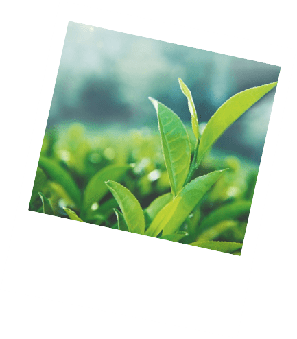
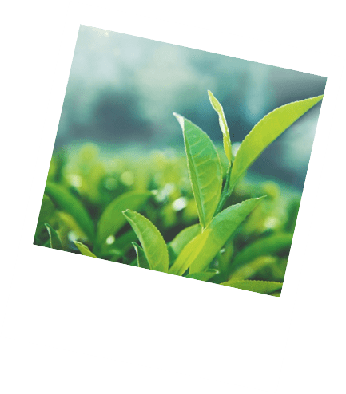

נפלאות התה
התה הקלאסי מופק מצמח אחד שנקרא "קמליה סינית"- צמח התה. לקמליה שני תת-מינים מרכזיים:
האחד מקורו בסין ונהוג לכנותו תה סיני, והשני מקורו בהודו ונהוג לכנותו תה אסאם. מה שמבדיל את משפחות
התה זו מזו הוא שלב התסיסה המשפיע על ההרכב הכימי והתכונות של התה. הודות לתפוצתו הנרחבת, נהוג
למנות עם משפחות התה גם את התה האדום, על אף שהוא הוא מופק מחליטת הצמח הדרום אפריקאי "רויבוס". מגוון
משקאות המופקים מצמחים שאינם צמח התה- נקראים למעשה חליטות צמחים ולא "תה" כפי שנהוג לחשוב. שלושת המרכיבים
העיקריים בצמח המעניקים לתה יתרונות בריאותיים הם מולקולות ה- EGCG נוגדות החמצון, חומצות אמיניות וקפאין.
 

שדה תה
צמח קמליה סינית
תה ירוק
מדינות עיקריות: מרוקו, מצרים, קניה.
ארומה: מתוקה בשילוב מרירות קלה.
תהליך: העלים עוברים הליך מהיר של ייבוש קל, גלגול לצורה המבוקשת וחימום בטמפרטורה גבוהה.
יתרונות בריאותיים: טיפול בשלשול קל, חיזוק במקרים של חולשה, זירוז פעילות הכליות (משתן), מרכיב בדיאטות המיועדות להורדה במשקל, שימוש כמשקה מעורר.
תה ירוק נחשב כמשפר את עור הפנים- הודות לכמות גבוהה של נוגדי חמצון שיש בו
תה שחור
מדינות עיקריות: סין, אנגליה, מצרים.
ארומה: חזקה, עשירה, מעושנת מעט.
תהליך: העלים עוברים תהליך חמצון במשך שבועיים עד חודש ולאחר מכן ייבוש.
יתרונות בריאותיים: מסייע בפעולות עיכול, מונע ריח רע מהפה, מסלק רעלים מהגוף ומסייע נגד דיכאון וכאבי ראש, תורם להפחתת הכולסטרול הרע, מקטין סיכויים לשבץ ומחלות לב ואף עוזר לגוף להחלים לאחר התקף לב.
עייפים? התה השחור מכיל כמות גבוהה של קפאין ולכן נחשב מעורר!
תה אולונג
מדינות עיקריות: טייוואן, סין.
ארומה: אולונג כהה- עשירה, פירותית, מזכירה מעט דבש.
אולונג בהיר- פירחונית וקלילה.
תהליך: העלים עוברים חמצון למחצה. קיים אולונג כהה העובר סיומת של אפייה בחום נמוך למשך שעות ארוכות, ואולונג בהיר שאינו עובר תהליך זה. עליו מסולסלים, מקופלים או מכודררים.
יתרונות בריאותיים: מעודד עיכול ומפחית ספיגת שומנים בגוף, מקל על תשישות נפש, סחרחורת וישנוניות, תחושת כבדות בגוף וקושי להתרכז ומסייע לטיפול בבצקת.
שתית קצת יותר מדי? תה אולונג יעזור להעביר את ההנגאובר
תה אדום
מדינות עיקריות: דרום אפריקה.
ארומה: אדמתית, עשירה ומתוקה מעט.
תהליך: עלי הצמח עוברים חמצון ותסיסה.
יתרונות בריאותיים: מחזק את המערכת החיסונית, מאט תהליכי הזדקנות, מסייע בהגנה על השיניים (מכיוון שהוא מקור טבעי לפלואוריד), מקל על בעיות עיכול והתכווצויות בטן, מקל על תופעות אלרגיות שונות, מרגיע ומסייע לשינה.
תה אדום לא עשוי מצמח התה, זהו כינוי שניתן לחליטה של צמח הרויבוס, שמוצאו בדרום אפריקה.
תה פו-אר
מדינות עיקריות: סין.
ארומה: עשירה, טעם המזכיר פטריות ואדמה.
תהליך: העלים עוברים חמצון ארוך, לאחר מכן ייבוש ולבסוף יישון- ממש כמו יין. היישון נעשה באוויר הפתוח, בחדרים עם לחות גבוהה ורוח, ויוצר שינויים בריח התה ובטעמיו. העלים המיובשים עוברים חמצון נוסף ותהליכי תסיסה.
יתרונות בריאותיים: הפחתת כולסטרול, סיוע לעיכול, מפחית הנגאובר (חמרמורת), משפר פעילות טחול וקיבה.
כמו יין, תה פו-אר משתבח עם השנים! ככל שזמן היישון של העלים ארוך יותר- התה נחשב ליוקרתי יותר
תה לבן
מדינות עיקריות: קניה, סין, יפן.
ארומה: עדינה, מעט מתוקה.
תהליך: העלים עוברים עיבוד מינימלי הכולל ייבוש איטי בטמפרטורות נמוכות ובניגוד למשפחות התה האחרות- ללא גלגול העלים. צורתו המקובלת דחוסה והוא מיועד להשבחה ע״י יישון בשל תסיסה איטית ומתמשכת גם לאחר האריזה.
יתרונות בריאותיים: מכיל כמות גדולה במיוחד של נוגדי חמצון, מחסל חיידקים ווירוסים, משפר שלווה, ריכוז וערנות.
תה לבן מונע הצטברות רובד בשיניים אז אם אתם רוצים חיוך מושלם- זה התה בשבילכם
תה צהוב
מדינות עיקריות: מצרים, קניה.
ארומה: רכה וקטיפתית.
תהליך: העלים עוברים הליך מהיר של ייבוש קל, גלגול לצורה המבוקשת וחימום בטמפרטורה גבוהה, נוסף על כך עובר תהליך הנקרא "הצהבה" בו עוטפים ומאדים אותו וכתוצאה מהליך זה עובר תהליך חמצון איטי.
יתרונות בריאותיים: עשיר בנוגדי חמצון, מסייע להפחתה במשקל, תורם לבריאות הפה, מסייע לבעיות בכבד, עוזר לדלקות מעיים.
מיוצר רק מן השיחים המשובחים ביותר, במשך זמן רב היה נחלתם של הקיסר והאצולה.